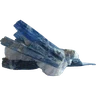

Mineral Grimoire

KyaniteAppearance
Blue, green, white, black, or yellow bladed crystals with perfect cleavage, often showing a pearlescent luster.
Origin
Brazil, Nepal, Switzerland, United States.
Attributes
Kyanite is excellent for attunement and meditation. It is tranquilizing and a powerful transmitter and amplifier of high frequency energies, stimulating psychic abilities and the intuition. With its ability to tune into the causal level, this stone can help spiritual energy to manifest in thought. This crystal connects to spirit guides and instills compassion. Grounding spiritual vibrations, it brings spiritual integrity and maturation. It facilitates dream recall and promotes healing dreams. Kyanite is helpful for those making the transition through death.
Kyanite instantly aligns the chakras and subtle bodies, clearing the pathways and meridians. It restores Qi to the physical body and its organs. In healing, it stabilizes the biomagnetic field after clearing and transformation.
As Kyanite does not hold negativity, it never requires cleaning.
Psychologically, Kyanite encourages speaking one's truth, cutting through fears and blockages. Opening the throat chakra, this stone encourages self-expression and communication. It cuts through ignorance and opens to spiritual and psychological truth.
Kyanite slices through confusion and dispels blockages, illusion, anger, frustration, and stress. It increases the capacity for logical and linear thought, stimulates the higher mind, and links into the causal level.
Spiritually, Kyanite assists in detaching from the idea of blind fate or implacable karma. It shows the part played by the self in creating causes and the measures required to balance the past. Kyanite facilitates the ascension process by drawing the light body down into the physical realm and connecting the higher mind to the highest frequencies.
Healing
Kyanite treats muscular disorders, fevers, the urogenital system, thyroid and parathyroid, adrenal glands, throat, and brain. A natural pain reliever, it lowers blood pressure and heals infections. It releases excess weight, supports the cerebellum and the motor responses of the body. Kyanite helps to balance yin-yang energy.
Position
As appropriate, particularly between navel and heart. Wear as pendant.
Additional Notes
Blue Kyanite strengthens the voice and heals the throat and the larynx. Useful for performers and public speakers.
Black Kyanite grounds the body when aligning the chakras and during or after meditation.
Dark Magick Applications
Kyanite can be used to get inside someone's head for either benevolent or malevolent purposes. When turned to darker ends, it acts like little knives lodging in the target's mind, creating persistent and invasive mental intrusion.